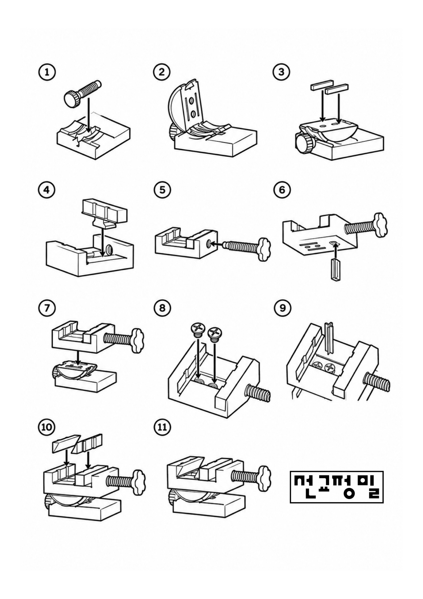

Assembly guide · 11 steps
선교정밀 바이스홀더
그림 순서(①→⑪)대로 조립하세요. 화면을 두 손가락으로 벌리면 확대할 수 있어요.

①–③
베이스에 손잡이 볼트를 끼우고 회전판과 고정 블록을 올립니다.
④–⑦
바이스 몸체에 가이드를 넣고 조임 볼트를 끼운 뒤, 회전판 위에 얹습니다.
⑧–⑪
나사 2개로 고정하고 조(jaw) 부품을 끼우면 완성입니다.